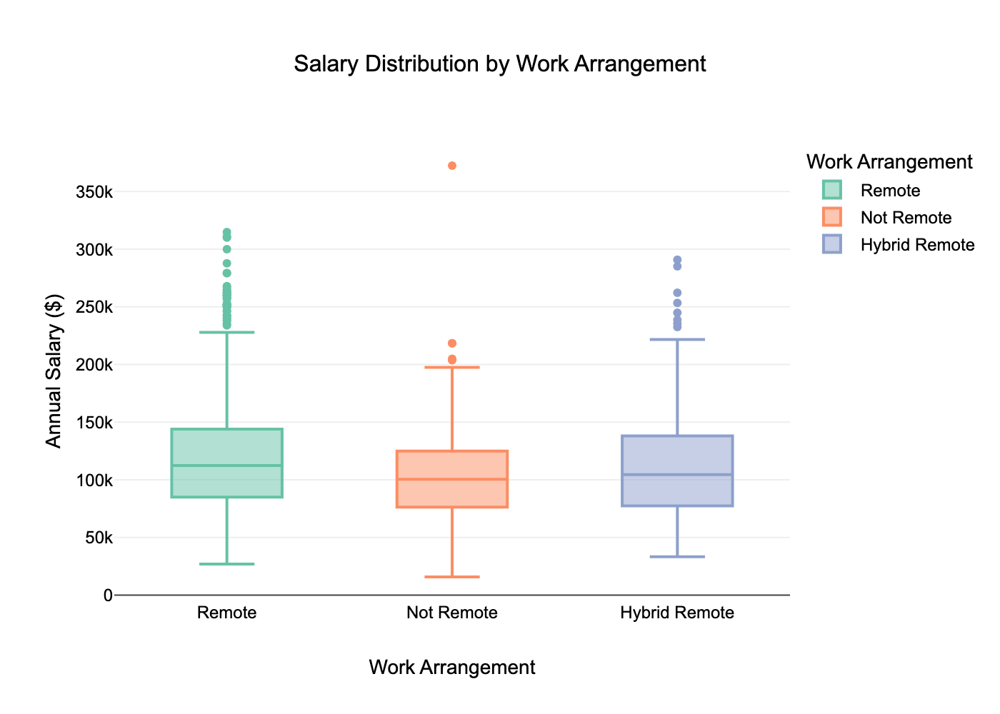
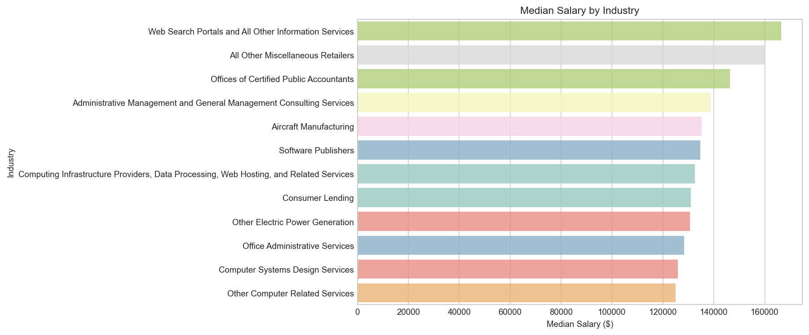
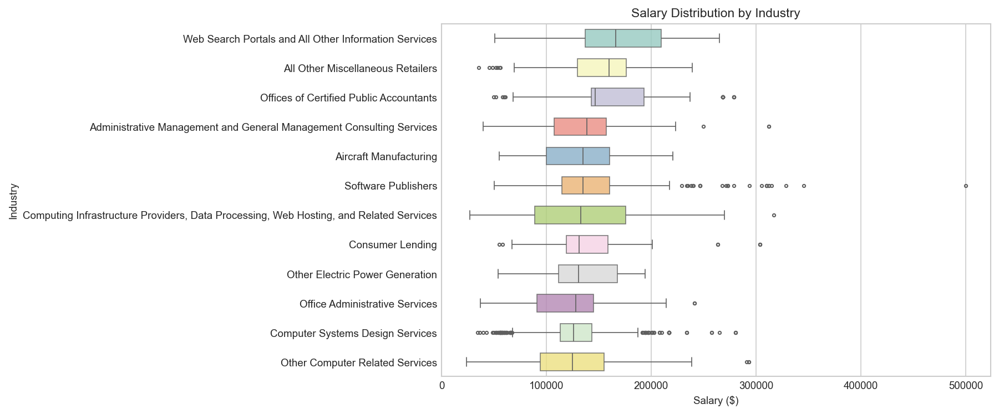

This section explores job market trends and the restructuring of compensation through a series of visualizations. Each exploratory data analysis (EDA) was chosen to reveal specific patterns in compensation to highlight the impact of AI and remote work.
Code
# _setup.qmdimport matplotlib.pyplot as pltimport seaborn as snsimport plotly.io as pioimport plotly.graph_objects as goimport plotly.express as px# Define a consistent themecustom_theme = go.layout.Template( layout=go.Layout( font=dict(family="Arial", size=12, color="#000000"), title=dict(font=dict(size=16, family="Arial")), paper_bgcolor="white", plot_bgcolor="white", colorway=px.colors.qualitative.Set2 ))pio.templates["custom_white"] = custom_themepio.templates.default ="custom_white"plt.style.use("seaborn-v0_8-whitegrid")plt.rcParams.update({"font.family": "Arial","font.size": 7,"axes.titlesize": 11,"axes.labelsize": 9,"figure.dpi": 120,"savefig.dpi": 150})sns.set_palette("Set2")
Code
import pandas as pd# Load pre-cleaned datasetdf = pd.read_csv("data/cleaned_job_postings.csv")
1 Salary by Remote Work Type
The purpose of this EDA is to visually compare not just the average pay, but also the range and consistency of salaries across different work arrangements. This visualization could reveal that remote roles have a wider salary range, indicating that companies are paying a premium for top talent regardless of location.
Code
# 5.1.1 Visual - Compensationimport plotly.express as pximport pandas as pdvalues_to_exclude = ['Unknown', '[None]']df_filtered = df[~df['REMOTE_TYPE_NAME'].isin(values_to_exclude)]fig1 = px.box( df_filtered, x="REMOTE_TYPE_NAME", y="SALARY", title="Salary Distribution by Work Arrangement", labels={"REMOTE_TYPE_NAME": "Work Arrangement", "SALARY": "Annual Salary ($)"}, width=800, height=600, color="REMOTE_TYPE_NAME", color_discrete_sequence=px.colors.qualitative.Set2)#fig1.show()fig1.write_image("figures/salary_by_work_arrangement.png", scale=2)

Figure 2: Salary Distribution by Work Arrangement
Key Insights: The median salaries across all work arrangements are similar, clustering around $115,000. However, both Remote and Hybrid Remote roles exhibit a much wider salary range and more high-paying outlier positions, with some remote roles exceeding $350,000. This suggests that while typical pay is comparable, remote-friendly positions offer significantly greater potential for top-end compensation.
2 Salary Trends by Top Industries
The motivation for this EDA is to explore how compensation varies across economic sectors and identify which industries offer the highest earning potential. Using the 2024 job posting data and grouping by industry (NAICS 2022 Level-6 codes), this analysis aims to compare the median salary and salary distribution across highest-paying industries within the job market.
Code
## Query Setup# Convert the POSTED date from string to date formatdf["POSTED"] = pd.to_datetime(df["POSTED"], errors="coerce")# Filter for job postings from 2024, specifically looking at Salary and Industry. Exclude unknowns, nulls, and zeros. Exclude 'Unclassified Industry' df_jp_2024 = df[ (df["POSTED"].dt.year==2024) & (df["SALARY"] >0) & (df["SALARY"].notnull()) & (df["NAICS_2022_6_NAME"]!="Unknown") & (df["NAICS_2022_6_NAME"]!="Unclassified Industry")]## Further filter to exclude industries that have an insignificant number of job postings# count the number of rows per industry industry_jp_count = df_jp_2024["NAICS_2022_6_NAME"].value_counts()# summarize the distribution of job counts per industryindustry_jp_count.describe()# Set minimum threshold at 100 job postings to ensure statistical significancetop_jp_industries = industry_jp_count[industry_jp_count >100].index# Update df to only show top job posting industriesdf_jp_2024 = df_jp_2024[df_jp_2024["NAICS_2022_6_NAME"].isin(top_jp_industries)]
Code
## Plot: Analyze Median Salary by Industry (Seaborn)import seaborn as snsimport matplotlib.pyplot as pltimport numpy as np# group by industry name and calculate median salary, sort by descending ordertop_industry_salary_order = ( df_jp_2024.groupby("NAICS_2022_6_NAME")["SALARY"] .median() .sort_values(ascending=False) .head(12))industry_order = top_industry_salary_order.index.tolist()plt.figure(figsize=(12, 5))ax1=sns.barplot( data=df_jp_2024, y="NAICS_2022_6_NAME", x="SALARY", hue="NAICS_2022_6_NAME", order=industry_order, orient='h', palette="Set3", estimator=np.median, errorbar=None, legend=False, alpha=0.8)for patch in ax1.patches: patch.set_alpha(0.8)plt.title("Median Salary by Industry")plt.xlabel("Median Salary ($)")plt.ylabel("Industry")plt.yticks(ha="right", fontsize=9)plt.xticks(fontsize=9)plt.tight_layout()out_path ="figures/median_salary_by_industry.png"plt.savefig(out_path, dpi=150, bbox_inches="tight")#plt.show()plt.close()

Figure 3: Median Salary by Industry
Code
## Plot: Analyze Salary Distribution by Industry (Seaborn)import seaborn as snsimport matplotlib.pyplot as pltimport numpy as np# # determine IQRs by industry:# q25 = df_jp_2024.groupby("NAICS_2022_6_NAME")["SALARY"].quantile(0.25)# q75 = df_jp_2024.groupby("NAICS_2022_6_NAME")["SALARY"].quantile(0.75)# # sort by the middle 50% (Q3 - Q1) and name that as the new sorting order# iqr = (q75 - q25).sort_values(ascending=False).head(12)#iqr_order = iqr.index.to_list()industry_order = top_industry_salary_order.index.tolist()plt.figure(figsize=(12, 5))ax2 = sns.boxplot( data=df_jp_2024, y="NAICS_2022_6_NAME", x="SALARY", order=industry_order, palette="Set3", width=0.6, fliersize=2.5, linewidth=0.8,)for patch in ax2.patches: patch.set_alpha(0.8)plt.title("Salary Distribution by Industry")plt.xlabel("Salary ($)")plt.ylabel("Industry")plt.yticks(ha="right", fontsize=9)plt.xticks(fontsize=9)plt.tight_layout()# Save and display the figureout_path ="figures/salary_distribution_by_industry.png"plt.savefig(out_path, dpi=150, bbox_inches="tight")#plt.show()plt.close()

Figure 4: Salary Distribution by Industry
Key Insights: The analysis of median salary across industries shows that Web Search Portals and All Other Information Services leads with the highest median pay, exceeding $160,000. This is likely due to the increasing demand on specialized digital infrastructure and AI-driven information services. The box plot shows a wide interquartile range (IQR), indicating a significant pay gap between entry-level and more senior/specialized roles in the industry. This trend is also observed in the Computing Infrastructure Providers, Data Processing, Web Hosting, and Related Services category, which is indicative of the range of roles in demand for those industries. Although other technology and information industries such as Software Publishers and Computer System Design Services reported slightly lower median salaries compared to the top-paying sectors, the large amount of high-end outlier values suggests that these industries still offer high-earning potential for more senior/specialized roles with most positions clustering around mid-range salaries.
Notably, non-technology/information-related sectors such as All Other Miscellaneous Retailers also reported high median salaries, around $160,000. The broad definition of these sectors likely encompasses various types of retail firms that may include roles and platforms beyond the traditional frontline retail and sales roles. Another sector in which compensation data may be inflated by data categorization is Offices of Certified Public Accountants (CPAs), which reported a median salary of around $145,000. Based on the salary distribution highlighted in the box plot, the positively-skewed distribution indicates that while most CPA roles earn around the median, some specialized roles are earning substantially more. This aligns with how CPA firms are typically structured, where a small number of senior partners and high-level executives driving the high-end outliers.
These findings show that companies in technology, professional services, and consulting industries offer the highest median salaries and exhibit a larger dispersion in compensation, which is reflective of a more diverse workforce structure that may include entry level, technical/specialist, and senior leadership roles. On the other hand, administrative and support service sectors demonstrate lower median but tighter distributions in salary, demonstrating a more standardized workforce and wage structure in comparison.
3 AI vs. Non-AI Salary Comparison
The motivation for this analysis was to investigate how specialization in AI-related skills influence salary in today’s job market. This analysis differentiates AI vs. non-AI jobs by identifying AI-related keywords such as machine learning, data science, computer vision, and natural language processing in job postings. We then compare the median and distribution of salaries between the two groups to determine whether AI roles command higher compensation than non-AI roles.
Code
import pandas as pdimport reimport seaborn as snsimport matplotlib.pyplot as plt# Create a lowercase version of the BODY column for keyword searchingdf["BODY"] = df["BODY"].astype(str).str.lower()# identify AI related keywords ai_keywords = ["machine learn", # matches 'machine learning', 'machine learner'"data scien", # matches 'data scientist', 'data science'"artificial intel", # matches 'artificial intelligence'"deep learn", "ml engineer", "data engineer","computer vision", "natural language", "nlp","big data","cloud data"]# Create a regex pattern that matches any of the keywords, case-insensitiveai_pattern = re.compile(r"|".join([re.escape(k) for k in ai_keywords]), flags=re.IGNORECASE)# Assign a new column is_ai_job to label job postings with AI or Non-AI based on keyword presence in the BODY textdf["is_ai_job"] = df["BODY"].apply(lambda text: "AI"if ai_pattern.search(text) else"Non-AI")# Filter out rows with null or zero salary and outliers df_filtered_1 = df[ (df["SALARY"].notnull()) & (df["SALARY"] >0)]q1 = df_filtered_1["SALARY"].quantile(0.01)q99 = df_filtered_1["SALARY"].quantile(0.99)df_filtered_1 = df_filtered_1[(df_filtered_1["SALARY"] >= q1) & (df_filtered_1["SALARY"] <= q99)]print(df_filtered_1["is_ai_job"].value_counts())
is_ai_job
Non-AI 15948
AI 5273
Name: count, dtype: int64
Code
plt.figure(figsize=(8, 5))ax3=sns.boxplot( data=df_filtered_1, x="is_ai_job", y="SALARY", hue="is_ai_job", legend=False, palette="Set3", width=0.4)for patch in ax3.patches: patch.set_alpha(0.8)plt.title("Salary Distribution: AI vs. Non-AI Jobs")plt.xlabel("Job Type", fontsize=9)plt.ylabel("Salary ($)", fontsize=9)plt.tight_layout()#plt.show()out_path ="figures/AI_v_nonAI_salary_boxplot.png"plt.savefig(out_path, dpi=150)plt.close()
Figure 5: Salary Distribution comparison between AI vs. Non-AI Jobs
Code
import matplotlib.pyplot as pltimport seaborn as sns# KDE Plotplt.figure(figsize=(8, 5))ax4=sns.kdeplot( data=df_filtered_1, x="SALARY", hue="is_ai_job", common_norm=False, linewidth=3, palette="Set2", alpha=0.8)for patch in ax4.patches: patch.set_alpha(0.8)plt.title("Salary Density: AI vs. Non-AI Jobs")plt.xlabel("Salary ($)", fontsize=9)plt.ylabel("Density", fontsize=9)plt.tight_layout()#plt.show()out_path ="figures/AI_v_nonAI_salary_KDE.png"plt.savefig(out_path, dpi=150)plt.close()
Figure 6: Salary Density comparison between AI vs. Non-AI Jobs
Key Insights: The salary comparison between AI and non-AI job postings shows a wage premium associated with roles that require AI-related skill sets. Analyzing 5273 AI roles and 15949 non-AI roles, the box plot shows that AI roles have a higher median salary ($115,000-$120,000) than non-AI roles ($105,000-$110,000). In terms of IQRs - both Q1 and Q3 for AI roles is positioned higher in comparison to non-AI roles. This suggests that roles that require expertise in AI-related skills generally pay better than the rest of the job market.
The KDE plot shows that AI roles have a steep upward slope from $20,000-$80,000 with job postings mostly clustering between $80,000-$120,000. This pattern likely means that there are less entry-level roles in AI and most roles are concentrated in the mid-salary range. This suggests that while there aren’t many jobs that reflect entry level salaries, AI-related job postings reflect a higher salary floor driven by a higher barrier of entry.